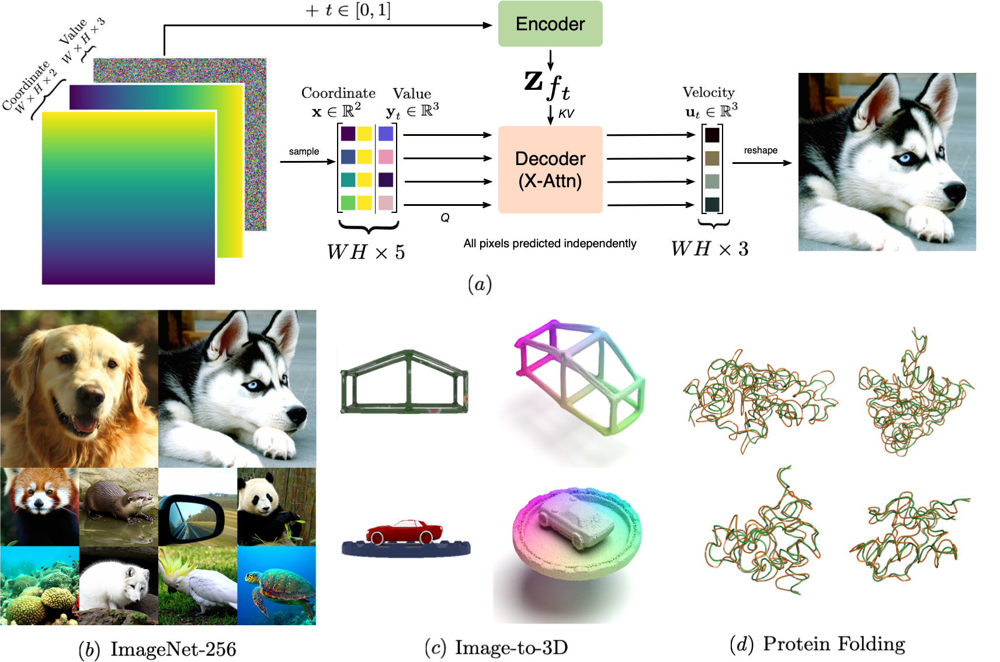
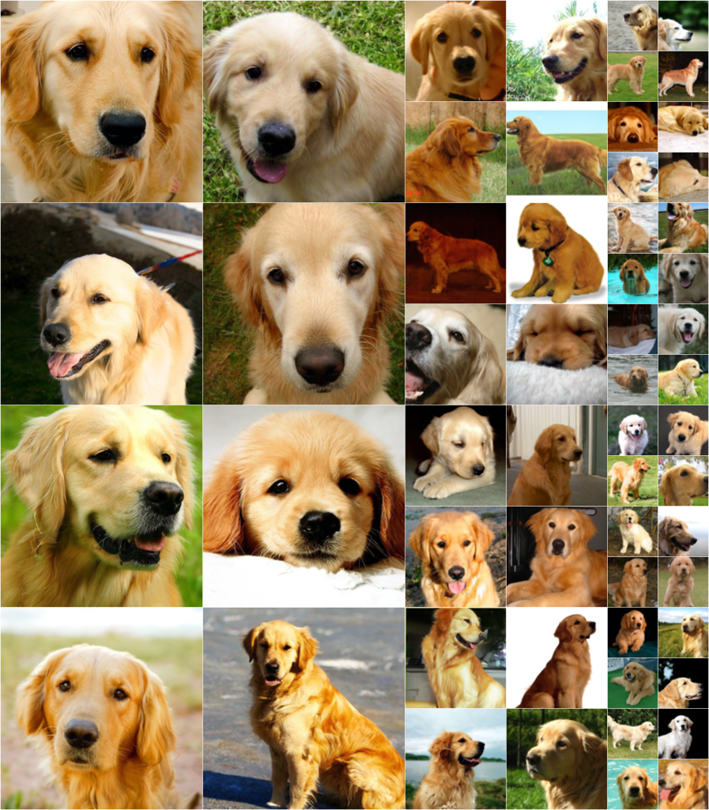
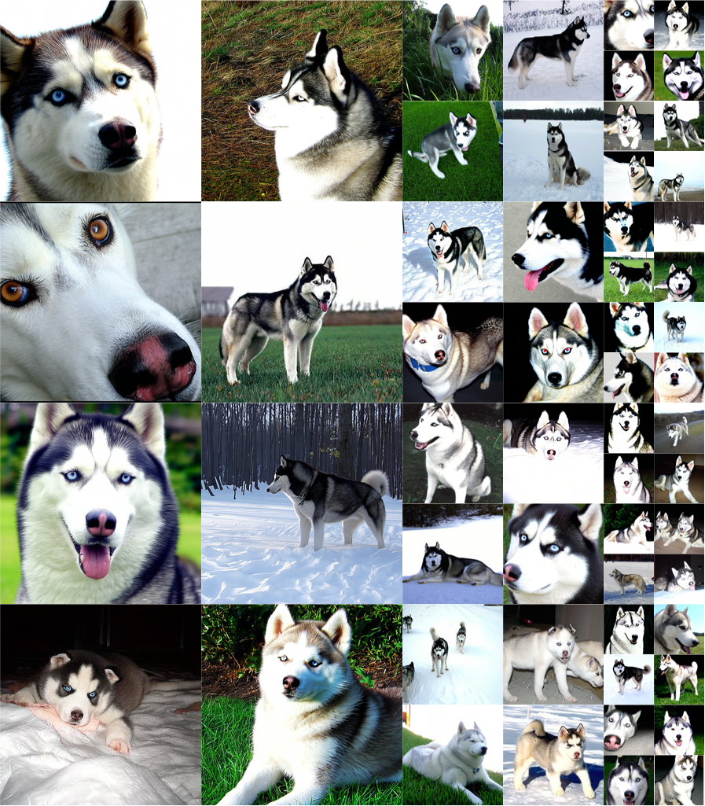
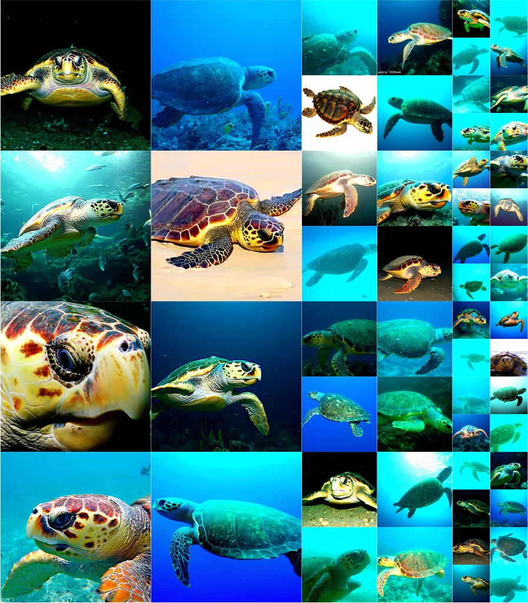
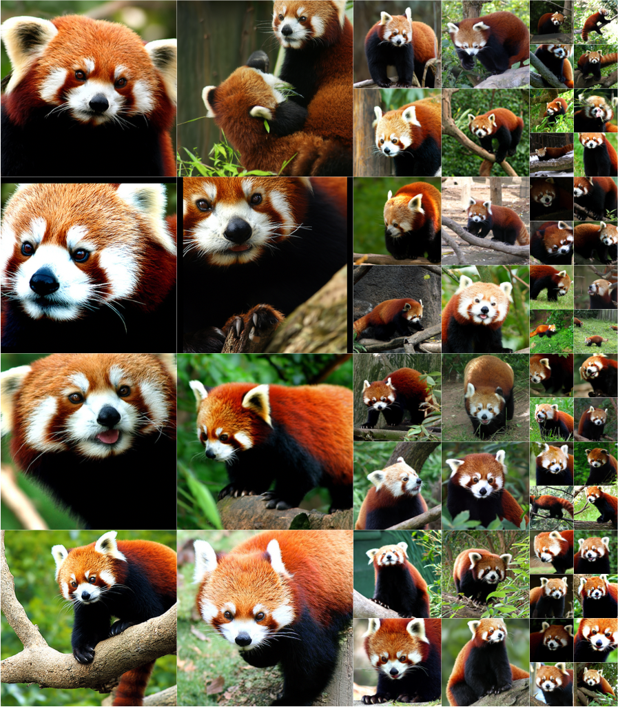
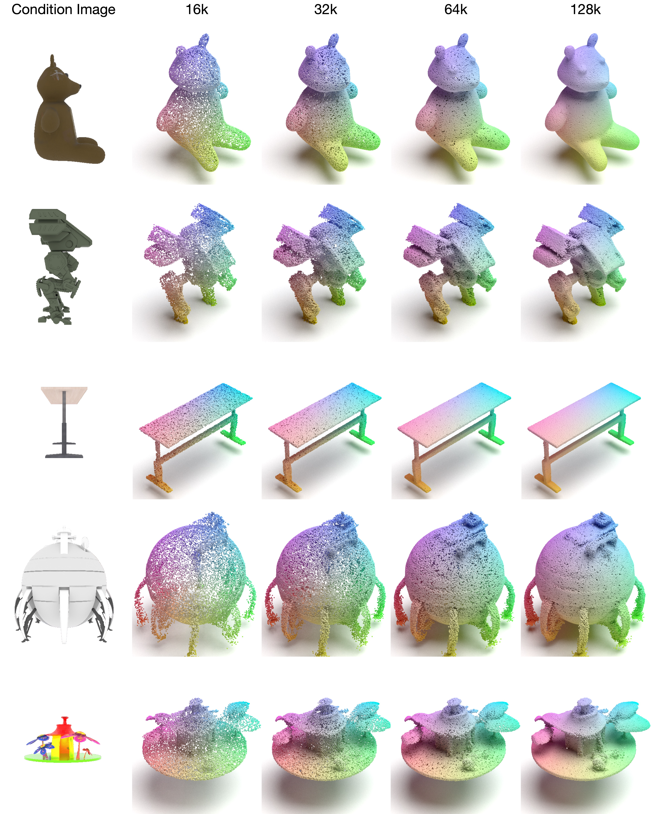
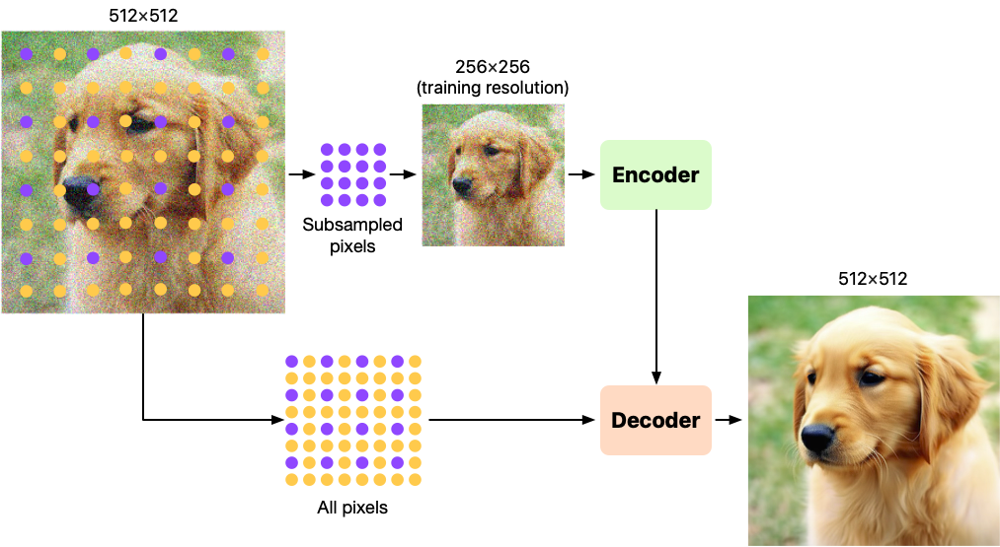
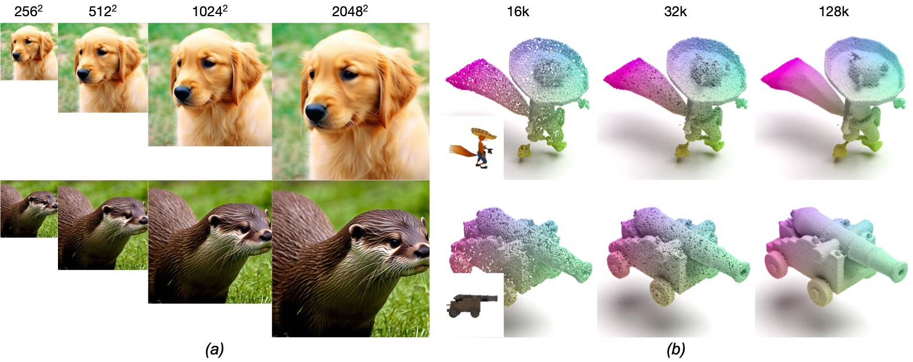
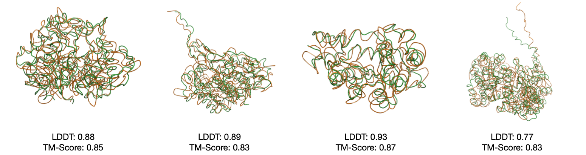

Abstract
Flow matching models have emerged as a powerful method for generative modeling on domains like images or videos, and even on irregular or unstructured data like 3D point clouds or even protein structures. These models are commonly trained in two stages: first, a data compressor is trained, and in a subsequent training stage a flow matching generative model is trained in the latent space of the data compressor. This two-stage paradigm sets obstacles for unifying models across data domains, as hand-crafted compressors architectures are used for different data modalities. To this end, we introduce INRFlow, a domain-agnostic approach to learn flow matching transformers directly in ambient space. Drawing inspiration from INRs, we introduce a conditionally independent point-wise training objective that enables INRFlow to make predictions continuously in coordinate space. Our empirical results demonstrate that INRFlow effectively handles different data modalities such as images, 3D point clouds and protein structure data, achieving strong performance in different domains and outperforming comparable approaches. INRFlow is a promising step towards domain-agnostic flow matching generative models that can be trivially adopted in different data domains.

Image generation: ImageNet256
We show a few non cherry-picked images generated by INRFlow for different classes of ImageNet at 256 resolution. INRFlow captures high-frequency content even when each pixel is decoded independently. INRFlow obtains FID scores on par with other pixel space models.
 |
 |
 |
 |
Image-to-3D: Objaverse
INRFlow can also be used for Image-to-3D generation. In this case we train INRFlow to generate 3D pointclouds given the input images as conditioning. Due to INRFlow learning directly in function space, it can sample denser pointclouds than previous approaches. Ultimately recovering a continuous surface.
 |
Resolution-free generation
At inference time we change the resolution at which our samples get generated. In particular, we show results of models trained on ImageNet256 and Objaverse using 16k pointclouds. At inference time, we denoise higher resolution samples than the ones either model has seen during training. Going from 256 to 2048 resolution for images and from 16k to 128k points for pointclouds.


Protein backbone generation: SwissProt
Finally, we also show that INRFlow can be trained to estimate protein backbones from sequences. In this case, we train our model to generate protein backbones given their corresponding protein sequences as input. Our results show that INRFlow is a strong domain-agnostic model that can be applied to multiple problems.
